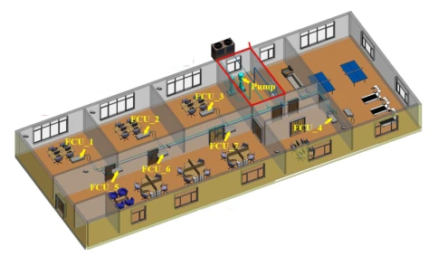
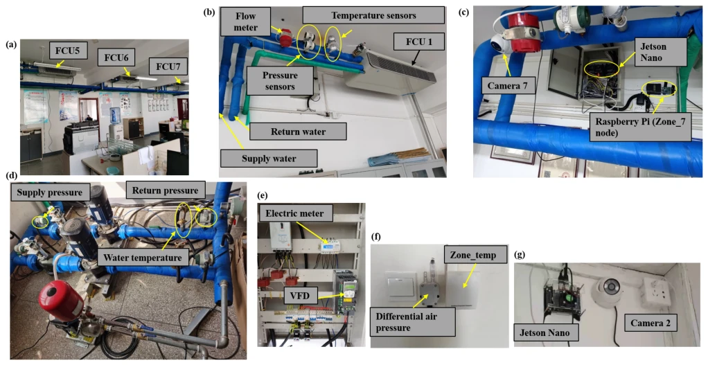
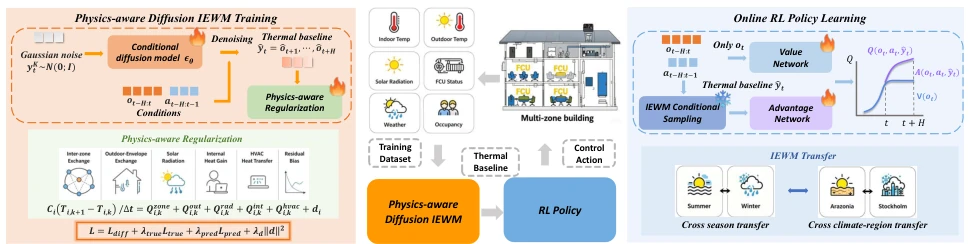
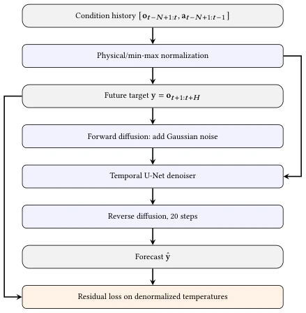
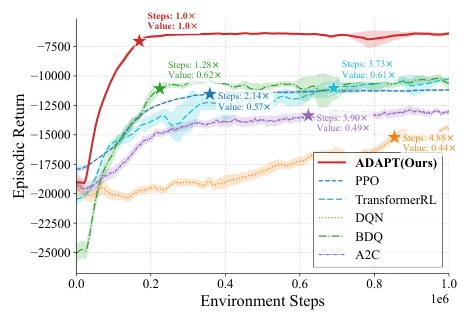
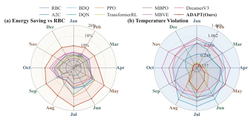
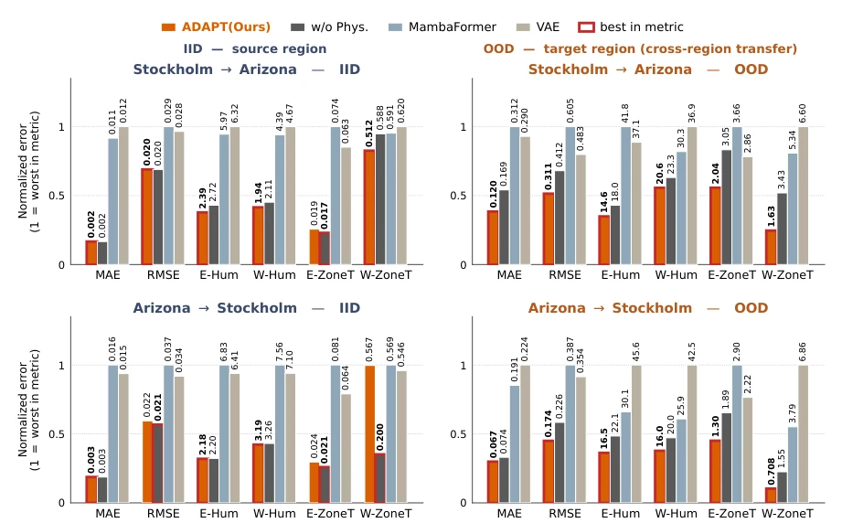
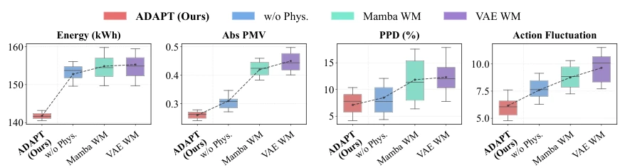
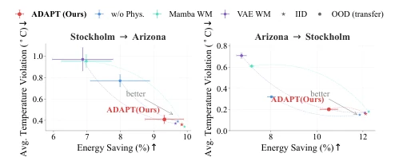
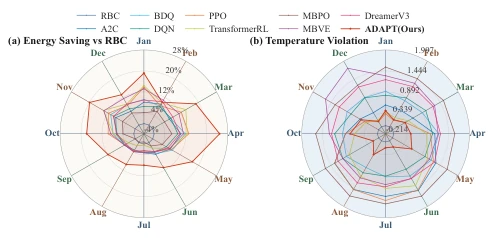

这篇论文给 HVAC 控制界注入了一剂“物理 + 扩散”的强心针。作者没走纯数据驱动的弯路，而是用扩散模型预测热基线，还硬塞了热平衡方程做正则化，这操作在纯 ML 圈里算是“物理外挂”。结果确实硬，跨季节跨气候迁移性能稳，能耗降了 7.3%，不适感降 30.2%。但吐槽一下，物理正则化只盯了温度，湿度这种“隐形杀手”没管，夏天湿度大时舒适度可能还得靠玄学。另外，虽然号称 World Model，其实更像是一个带物理约束的预测器，离端到端具身智能还有距离，但在建筑能源领域已经算顶配了。它证明了在特定领域，物理先验比纯数据拟合更能扛 OOD 打击，值得建筑科学和 AI 交叉领域关注。
This paper injects a "physics + diffusion" strong stimulant into the HVAC control community. The authors did not take the detour of pure data-driven methods, but used diffusion models to predict thermal baselines, and incorporated heat balance equations for regularization; this operation counts as a "physics cheat code" in the pure ML circle. The results are indeed robust, cross-season and cross-climate transfer performance is stable, energy consumption decreased by 7.3%, discomfort decreased by 30.2%. However, a critique is worth noting: physical regularization only focused on temperature, ignoring humidity as an "invisible killer"; in summer when humidity is high, comfort might still rely on "metaphysics". Additionally, although claimed as a World Model, it is actually more like a predictor with physical constraints, still far from end-to-end embodied intelligence, but already top-tier in the building energy field. It proves that in specific domains, physical priors are more capable of withstanding OOD shocks than pure data fitting, worthy of attention in the building science and AI interdisciplinary field.
Building energy consumption accounts for one-third of the global total, HVAC is the main force [5]. However, building thermal dynamics have delays and partial observability, leading traditional MPC to be sensitive to model mismatch [14], and DRL struggles to handle delayed credit assignment [2]. Existing World Models mostly focus on general control, lacking explicit modeling for HVAC thermal distribution shifts (season/climate) [13]. Pure data-driven models easily overfit training distributions, with poor cross-domain transfer [12]. Furthermore, climate change makes heating and cooling demands dynamic, requiring control strategies to possess robustness. Therefore, a predictive model capable of capturing latent thermal inertia, being physics-consistent and transferable is needed, supporting downstream RL delayed feedback, to achieve robust cross-season and cross-climate control.

Figure 7: Layout of the office building. Source from [65].

Figure 8: HVAC system configuration. (a) FCUs of zones 5 to 7. (b) Sensors of FCU 1. (c) Video sampling of zone 7. (d) Sensors of water pumps. (e) Electrical cabinet. (f) Temperature sensor. (g) Video camera of zone 2. Source from [65].
The overall process is divided into two stages: first train Physics-aware Diffusion IEWM, then freeze IEWM for online RL policy learning. Core innovations lie in: 1) Conditional Diffusion Model: conditioned on historical trajectories and held-actions, generating future thermal baselines as counterfactual references to solve delayed credit assignment problems [10]. 2) Physics-aware Regularization: introducing differentiable multi-zone heat balance equations, treating heat exchange (inter-zone, outdoor, radiation, internal, HVAC) as soft constraints, forcing generated trajectories to conform to physical laws, without manual parameter calibration. 3) RL Integration: injecting predicted baselines into Advantage Stream, combining Commitment Rollout to evaluate long-term thermal effects of actions, optimizing TD-λ objectives. Additionally, jointly optimizing diffusion denoising loss and physics residual loss during training, ensuring generated data conforms to statistical distributions and satisfies thermodynamic conservation, thereby maintaining prediction consistency under unseen climates.

Figure 1: Overall framework of ADAPT. The training process of ADAPT is divided into two phases. Phase I: Physics-aware Diffusion IEWM Training. Phase II: Online RL Policy Learning. IEWM is frozen during phase II.

Figure 11: ADAPT architecture for conditional diffusion world-model prediction.
实验Experiments
在 SemiBuildingSim（河北真实建筑）和 Sinergym（Stockholm vs Arizona）上测试 [9]。基线包括 MPC [14]、DRL (PPO, DQN) 及 MBRL 等。指标涵盖能耗、舒适度 (PPD/PMV) [3]、温度违规。ADAPT 在 ID 设置下能耗降 7.3%，不适感降 30.2%。跨季节（夏↔冬）和跨气候（瑞典↔亚利桑那）OOD 迁移中，ADAPT 预测误差显著低于 MambaFormer 和 VAE 基线，证明物理约束提升了泛化性。消融实验显示物理损失权重需平衡，过大影响扩散模型表达能力。此外，在 Stockholm 夏季强光热增益下，ADAPT 能更主动抑制不必要的制冷动作，验证了热基线预测对控制决策的引导作用。
Tested on SemiBuildingSim (Hebei real building) and Sinergym (Stockholm vs Arizona) [9]. Baselines include MPC [14], DRL (PPO, DQN), and MBRL, etc. Metrics cover energy consumption, comfort (PPD/PMV) [3], temperature violations. ADAPT reduced energy consumption by 7.3% and discomfort by 30.2% under ID settings. In cross-season (Summer↔Winter) and cross-climate (Sweden↔Arizona) OOD transfer, ADAPT prediction error was significantly lower than MambaFormer and VAE baselines, proving physical constraints improved generalization. Ablation experiments show physical loss weights need balancing; too large affects diffusion model expressiveness. Additionally, under Stockholm summer strong light heat gain, ADAPT can more actively suppress unnecessary cooling actions, verifying the guiding role of thermal baseline prediction on control decisions.

Figure 2: Training curves on SemiBuildingSim Summer. Stars mark the first point where each method reaches 95% of its final episodic return. The labels report relative convergence steps (lower is better) and relative covergence return (higher is better), both normalized to ADAPT (Ours) = 1.0×.

Figure 3: Comparison of ADAPT with baselines in Sinergym Stockholm environment (ID). (a) energy savings relative to rule-based controller (RBC), (b) temperature violation. is particularly pronounced for room temperature and return tem- perature, while the purely data-driven diffusion model and other sequence modeling baselines degrade substantially under OOD conditions.

Figure 4: Cross-region transfer prediction performance on Sinergym 2ZoneDataCenter (Stockholm ↔Arizona). CVRMSE are annotated above each bar. Red outlines indicate the best value per metric (lower is better).

Figure 5: Comparison of different IEWMs downstream control performance on SemibuildingSim Winter →Summer transfer. Lower is better.

Figure 6: Comparison of different IEWMs downstream con- trol performance on Sinergym cross climate-region transfer.

Figure 9: Comparison of ADAPT with baseline controllers in Sinergym under the ID control setting for the Arizona environment. Subfigure (a) reports energy saving relative to RBC, and subfigure (b) reports temperature violation. Higher energy saving and lower temperature violation indicate bet- ter overall control performance.